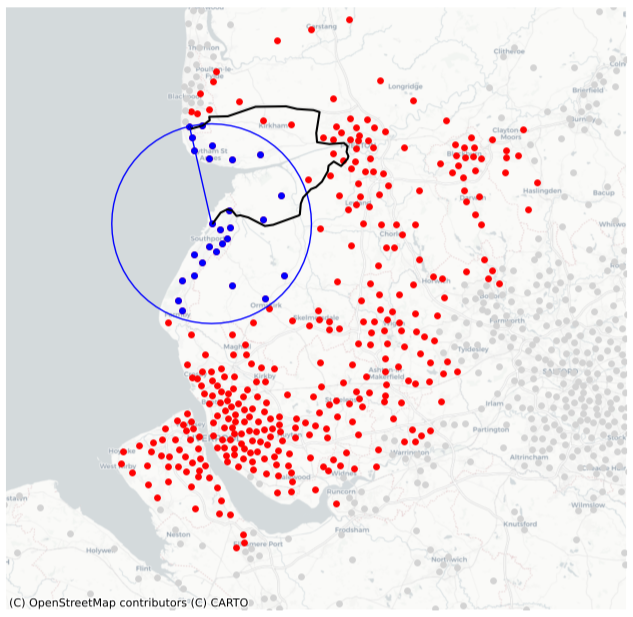

Radiation model#
Pairs of MSOAs not modelled using a Fourier series are less likely to have significant structure in their time series of journey numbers. Rather than modelling each pair separately, we therefore apply a more global approach. The gravity model has been a popular choice for describing migration and commuting patterns and is based on the assumption that the average number of individuals travelling between two areas is proportional to the population of the areas and inversely proportional to the distance between them8. Relying solely on the population and distance implies that pairs with similar populations and distance should have comparable fluxes, yet examples exist where movement patterns differ by orders of magnitude. Nowadays, the radiation model is seen as a preferred choice. Whilst this model also considers the population of the two areas, it incorporates an additional variable: the population within a circle centred at the start location, with radius equal to the distance between the two areas9. This population serves as a proxy for the resources, such as employment opportunities, accessible to individuals in the start location. Longer journeys are assumed to be less likely if similar opportunities can be found at an equal or shorter distance.
Mathematical description
Let \(n_i\) and \(n_j\) be the populations of start MSOA \(i\) and end MSOA \(j\), \(r_{i,j}\) be the distance in kilometers between the MSOAs, and \(s_{i,j}\) be the population inside a ring of radius \(r_{i,j}\) centered on the start MSOA. The radiation model assumes that the number of journeys between the start and end MSOA is Poisson distributed with mean:
In the original radiation model, \(\theta_h\) represents the proportion of residents in the start MSOA that commute. However, to make full use of the hourly journey counts provided by the mobile telecoms data, we instead define it such that \(\theta_h n_i\) is the number of individuals moving from the start MSOA during hour \(h\). Note that using the population of the start MSOA is a simplification since it does not account for individuals that have entered and exited the MSOA in preceding hours. When considering the distance between MSOAs, the geodesic distance can lead to underestimates of the population \(s_{i,j}\) and therefore overestimate the connectivity of the MSOAs. To avoid this, \(r_{i,j}\) is defined more precisely to be the road distance between the MSOAs. The road distances between all pairs of MSOAs are obtained using the Open Source Routing Machine.
The map below shows the centroids of MSOAs that are included in the definition of \(s_{i,j}\) for a single MSOA pair. Blue dots represent those included when the geodesic distance is used, red dots are the additional MSOAs included when using the road distance, and grey dots are MSOAs excluded by both methods. The black line marks the driving route used to define the road distance between the MSOAs. The extreme difference between methods is particularly apparent when considering coastal MSOAs.
{kind=link}
Parameter estimation
The parameters \(n_i\), \(n_j\) and \(s_{i,j}\) are all properties of the start and end MSOA and are therefore known, leaving \(\theta_h\) as the only free parameter in the model. To estimate \(\theta_h\) for a single hour, let \((b_0, b_1,...,b_N)\) denote the boundaries of \(N\) consecutive distance intervals such that \(b_0 < b_1 < ... < b_N\) - here, the distance intervals are each set to ten kilometers. If \(\mathcal{X}_v = \{(i,j): b_v < r_{i,j} \leq b_{v+1}\}\) is the set of all MSOA pairs whose road distance lies within the interval \((b_v, b_{v+1}]\), then the total number of journeys that occur between these MSOAs is also Poisson distributed with mean
Let \(\mathbf{X}=(x_{w,v})\) be a matrix of observed values for MSOA pairs not modelled by a Fourier series, such that \(x_{w,v}\) is the total number of journeys in distance interval \(v\) during week \(w\). The log-likelihood of these observations is then given by
Posterior probability likelihood distributions for each \(\theta_h\) can be obtained independently using the Python MCMC implementation emcee with the above log-likelihood10. Weekday and weekend posterior median estimates for \(\theta_h\) are provided below. For weekdays, two distinct peaks occur at common commuting times, with low estimates during the night. Over the weekend, however, a single prolonged peak exists from late-morning to late-afternoon.
{kind=link}
With these posterior median estimates of \(\theta_h\), realizations of journey numbers during hour \(h\) can be generated by sampling from a Poisson distribution with mean \(T_{i,j}(\theta_h)\).